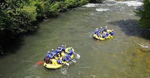
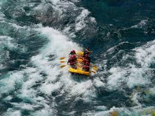

Rafting Adventure
Welcome to my Rafting Website! Here you can explore exciting rafting trips, learn about safety tips, and see beautiful river landscapes.
Featured Rivers
River 1 offers thrilling rapids perfect for beginners and intermediates.
River 2 is known for its scenic beauty and challenging waters.
Safety Tips
- Always wear a life jacket.
- Follow your guide's instructions.
- Check weather conditions before rafting.